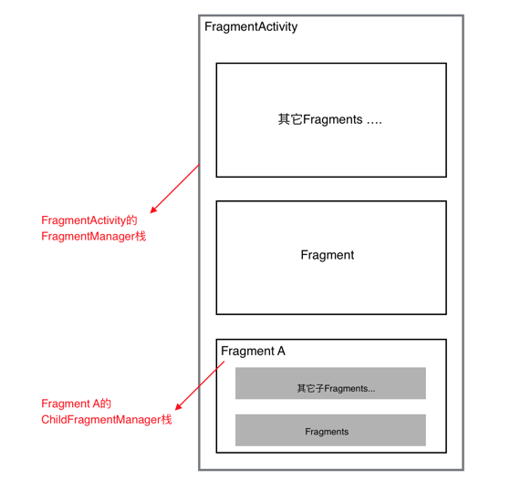

Fragment全解析系列（二）：正确的使用姿势
本篇主要介绍一些Fragment使用技巧。
Fragment是可以让你的app纵享丝滑的设计，如果你的app想在现在基础上性能大幅度提高，并且占用内存降低，同样的界面Activity占用内存比Fragment要多，响应速度Fragment比Activty在中低端手机上快了很多，甚至能达到好几倍！如果你的app当前或以后有移植平板等平台时，可以让你节省大量时间和精力。
简陋的目录
- 1、一些使用建议
- 2、add(), show(), hide(), replace()的那点事
- 3、关于FragmentManager你需要知道的
- 4、使用ViewPager+Fragment的注意事项
- 5、Fragment事务，你可能不知道的坑
- 6、是使用单Activity＋多Fragment的架构，还是多模块Activity＋多Fragment的架构？
作为一个稳定的app，从后台且回到前台，一定会在任何情况都能恢复到离开前的页面，并且保证数据的完整性。
如果你没看过本系列的第一篇，为了方便后面文章的介绍，先规定一个“术语”，安卓app有一种特殊情况，就是 app运行在后台的时候，系统资源紧张的时候导致把app的资源全部回收（杀死app的进程），这时把app再从后台返回到前台时，app会重启。这种情况下文简称为：“内存重启”。
一些使用建议
1、对Fragment传递数据，建议使用
setArguments(Bundle args)，而后在onCreate中使用getArguments()取出，在 “内存重启”前，系统会帮你保存数据，不会造成数据的丢失。和Activity的Intent原理一致。2、使用newInstance(参数) 创建Fragment对象，优点是调用者只需要关系传递的哪些数据，而无需关心传递数据的Key是什么。
3、如果你需要在Fragment中用到宿主Activity对象，建议在你的基类Fragment定义一个Activity的全局变量，在
onAttach中初始化。原因参考第一篇的“getActivity()空指针”部分，在onCreateView() 内出现getActivity()的代码 很可能是危险的。
protected Activity mActivity;
@Override
public void onAttach(Activity activity) {
super.onAttach(activity);
this.mActivity = activity;
}
add(), show(), hide(), replace()的那点事
- 1、区别
show()，hide()最终是让Fragment的View setVisibility(true还是false)，不会调用生命周期；
replace()的话会销毁视图，即调用onDestoryView、onCreateView等一系列生命周期；
add()和replace()不要在同一个阶级的FragmentManager里混搭使用。
- 2、使用场景
如果你有一个很高的概率会再次使用当前的Fragment，建议使用show()，hide()，可以提高性能。
在我使用Fragment过程中，大部分情况下都是用show()，hide()，而不是replace()。
- 3、onHiddenChanged的回调时机
当使用add()+show()，hide()跳转新的Fragment时，旧的Fragment回调onHiddenChanged()，不会回调onStop()等生命周期方法，而新的Fragment在创建时是不会回调onHiddenChanged()，这点要切记。
- 4、Fragment重叠问题
使用show()，hide()带来的一个问题就是，如果你不做任何处理，在“内存重启”后，Fragment会重叠；
有些小伙伴可能就是为了避免Fragment重叠问题，而选择使用replace()，但是使用show()，hide()时，重叠问题是完全可以解决的，有两种方式解决，详情参考上一篇。
关于FragmentManager你需要知道的
- 1、FragmentManager栈视图
（1）每个Fragment以及宿主Activity(继承自FragmentActivity)都会在创建时，初始化一个FragmentManager对象，处理好Fragment嵌套问题的关键，就是理清这些不同阶级的栈视图。
下面给出一个简要的关系图：

（2）对于宿主Activity，getSupportFragmentManager()获取的FragmentActivity的FragmentManager对象;
对于Fragment，getFragmentManager()是获取的是父Fragment(如果没有，则是FragmentActivity)的FragmentManager对象，而getChildFragmentManager()是获取自己的FragmentManager对象。
- 2、恢复Fragment时（同时防止Fragment重叠），选择getFragments()还是findFragmentByTag()
（1）选择getFragments()
对于一个Activity内的多个Fragment，如果Fragment的关系是“流程”，比如登录->注册/忘记密码->填写信息->跳转到主页Activity。这种情况下，用getFragments()的方式是最合适的，在你的Activity内（更好的方式是在你的所有"流程"基类Activity里），写下如下代码：
@Override
protected void onCreate(@Nullable Bundle savedInstanceState) {
super.onCreate(savedInstanceState);
if (savedInstanceState != null) {
List<Fragment> fragments = getSupportFragmentManager().getFragments();
if (fragments != null && fragments.size() > 0) {
boolean showFlag = false;
FragmentTransaction ft = getSupportFragmentManager().beginTransaction();
for (int i = fragments.size() - 1; i >= 0; i--) {
Fragment fragment = fragments.get(i);
if (fragment != null) {
if (!showFlag) {
ft.show(fragments.get(i));
showFlag = true;
} else {
ft.hide(fragments.get(i));
}
}
}
ft.commit();
}
}
}
（2）选择findFragmentByTag()恢复
如果你的Activity的Fragments，不是“流程”关系，而是“同级”关系，比如QQ的主界面，“消息”、“联系人”、“动态”，这3个Fragment属于同级关系，用上面的代码就不合适了，恢复的时候总会恢复最后一个，即“动态Fragment”。
正确的做法是在onSaveInstanceState()内保存当前所在Fragment的tag或者下标，在onCreate()是恢复的时候，隐藏其它2个Fragment。
@Override
protected void onCreate(Bundle savedInstanceState) {
super.onCreate(savedInstanceState);
setContentView(R.layout.activity);
MsgFragment msgFragment;
ContactFragment contactFragment;
MeFragment meFragment;
if (savedInstanceState != null) { // “内存重启”时调用
msgFragment = getSupportFragmentManager().findFragmentByTag(msgFragment.getClass().getName);
contactFragment = getSupportFragmentManager().findFragmentByTag(contactFragment.getClass().getName);
meFragment = getSupportFragmentManager().findFragmentByTag(meFragment.getClass().getName);
index = saveInstanceState.getInt(KEY_INDEX);
// 根据下标判断离开前是显示哪个Fragment，
// 这里省略判断代码，假设离开前是ConactFragment
// 解决重叠问题
getFragmentManager().beginTransaction()
.show(contactFragment)
.hide(msgFragment)
.hide(meFragment)
.commit();
}else{ // 正常时
msgFragment = MsgFragment.newInstance();
contactFragment = ContactFragment.newInstance();
meFragment = MeFragment.newInstance();
getFragmentManager().beginTransaction()
.add(R.id.container, msgFragment, msgFragment.getClass().getName())
.add(R.id.container, contactFragment, contactFragment.getClass().getName())
.add(R.id,container,meFragment,meFragment.getClass().getName())
.hide(contactFragment)
.hide(meFragment)
.commit();
}
}
@Override
public void onSaveInstanceState(Bundle outState) {
super.onSaveInstanceState(outState);
// 保存当前Fragment的下标
outState.putInt(KEY_INDEX, index);
}
当然在“同级”关系中，使用getFragments()恢复也是可以的。
使用ViewPager+Fragment的注意事项
- 1、使用ViewPager＋Fragment时，切换不同ViewPager页面，不会回调任何生命周期方法以及onHiddenChanged()，只有setUserVisibleHint(boolean isVisibleToUser)会被回调，所以如果你想进行一些懒加载，需要在这里处理。
- 2、在给ViewPager绑定FragmentPagerAdapter时，new FragmentPagerAdapter(fragmentManager)的FragmentManager，一定要保证正确，如果ViewPager是Activity内的控件，则传递getSupportFragmentManager()，如果是Fragment的控件中，则应该传递getChildFragmentManager()。只要记住ViewPager内的Fragments是当前组件的子Fragment这个原则即可。
- 3、如果使用ViewPager+Fragment，不需要在“内存重启”的情况下，去恢复的Fragments，有FragmentPagerAdapter的存在，不需要你去做恢复工作。
Fragment事务，你可能不知道的坑
- 1、如果你在使用popBackStackImmdiate()方法后，紧接着直接调用类似如下事务的方法，因为他们运行在消息队列的问题，还没来得及出栈就运行事务的方法了，这可能会导致不正常现象。
getSupportFragmentManager().popBackStackImmdiate();
getSupportFragmentManager().beginTransaction()
.add(R.id.container, fragment , tag)
.hide(currentFragment)
.commit;
正确的做法是使用主线程的Handler，将事务放到Runnable里运行。
getSupportFragmentManager().popBackStackImmdiate();
new Handler().post(new Runnable(){
@Override
public void run() {
// 在这里执行Fragment事务
}
});
- 2、给Fragment设定Fragment转场动画时，如果你没有一整套解决方案，应避免使用
.setTransition(transit)以及.setCustomAnimations(enter, exit, popEnter, popExit)，而只使用.setCustomAnimations(enter, exit)这个方法。
其它2个方法会在某种情况下的“内存重启”中会出现BUG。
本系列最后一篇给出了我的解决方案，解决了该问题，有兴趣可以自行查看 :)
另外一提：谨慎使用popStackBack(String tag/int id,int flasg)系列的方法，原因在上一篇中已经描述。
是使用单Activity＋多Fragment的架构，还是多模块Activity＋多Fragment的架构？
- 单Activity＋多Fragment：
一个app仅有一个Activity，界面皆是Frament，Activity作为app容器使用。
优点：性能高，速度最快。参考：新版知乎 、google系app
缺点：逻辑比较复杂，尤其当Fragment之间联动较多或者嵌套较深时，比较复杂。
- 多模块Activity＋多Fragment：
一个模块用一个Activity，比如
1、登录注册流程：LoginActivity + 登录Fragment + 注册Fragment + 填写信息Fragment ＋ 忘记密码Fragment
2、或者常见的数据展示流程：DataActivity + 数据列表Fragment + 数据详情Fragment ＋ ...
优点：速度快，相比较单Activity+多Fragment，更易维护。
我的观点：
权衡利弊，我认为多模块Activity＋多Fragment是最合适的架构，开发起来不是很复杂，app的性能又很高效。
当然。Fragment只是官方提供的灵活组件，请优先遵从你的项目设计！真的特别复杂的界面，或者单个Activity就可以完成一个流程的界面，使用Activity可能是更好的方案。
最后
如果你读完了第一篇和这篇文章，那么我相信你使用多模块Activity+多Fragment的架构所遇到的坑，大部分都应该能找到解决办法。
但是如果流程较为复杂，比如Fragment A需要启动一个新的Fragment B并且关闭当前A,或者A启动B，B在获取数据后，想在返回到A时把数据交给A（类似Activity的startActivityForResult），又或者你保证在Fragment转场动画的情况下，使用pop(tag\id)从栈内退出多个Fragment，或者你甚至想Fragment有一个类似Activity的SingleTask启动模式，那么你可以参考下一篇，我的解决方案库，Fragmentation。它甚至提供了一个让你在开发时，可以随时查看所有阶级的栈视图的UI界面。
文／YoKey（简书作者） 原文链接：http://www.jianshu.com/p/fd71d65f0ec6 著作权归作者所有，转载请联系作者获得授权，并标注“简书作者”。